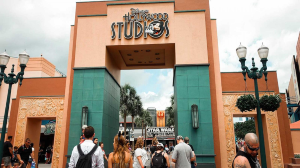
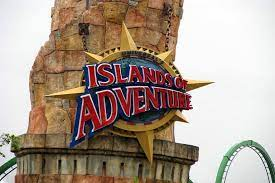
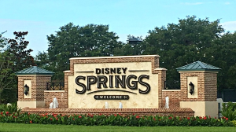

magic kingdom

este parque de atracciones inspirado en los cuentos infantiles de disney cuenta con mas de 300 atracciones,varios espectáculos y se pueden encontrar con algunos de los personajes de disney,como goofy o cenicienta.entre las mejores atracciones se encuentran:
- the magic carpets of aladdin y dumbo the flying elephant,en donde podrás volar encima de alfombras y elefantes y ademas veras las otras atracciones desde las alturas.
- peter pan´s flying,aquí volaras con peter pan y podrás ver la ciudad de londres desde las alturas.
- pirates of caribbean,en esta navegaras en un barco y veras escenarios que aparecen en las películas,como el pueblo donde el capitán sparrow buscaba tripulación.
- buzz lightyear´s space ranger spin,te subirás a una nave espacial que te llevara por un paseo en donde debes hacer uso de tu puntería para derribar a los marcianos.
algunos de los desfiles y espectáculos son:
- mouseke dance it!:mickey y minnie cantan y bailan encima de carrozas coloridas.
- festival of fantasy parade:los personajes de disney bailaran y cantaran haciendo un homenaje a los cuentos de fantasía de disney.
- happily ever after:al final del día,y antes de que cierren el parque,se hace un espectaculo lanzando fuegos artificiales.

hollywood studios
este parque cuenta con atracciones para niños y adultos distribuidas en 9 regiones:hollywood boulevard,echo lake,commissary lane,grand avenue,star wars galaxy edge,toy story land,an incredible celebration,animation coutyard y sunset boulevard.
entre las mejores atracciones del parque tenemos a:
- the twilight tower of terror:primero darán un paseo por el tenebroso hotel donde los fantasmas te contaran una historia sobre un suceso que ocurrio allí en halloween de 1939.luego subirás a un ascensor antiguo y desmejorado donde te harán subir y bajar varios pisos.
- star wars new era,donde los pasajeros pueden pilotear el millennium falcon y también unirse a la resistencia en una batalla contra la primera orden.
- rock n´ roller coaster aerosmith:se trata de una montaña rusa interna de alta velocidad que te llevara en un recorrido nocturno por la ciudad de los ángeles mientras escuchas las canciones de aerosmith.
- slinky dog dush,donde podrán dar un paseo tranquilo en montaña rusa con slinky(el perrito de toy story)y cuando lleguen a lo mas alto podrán ver el patio trasero de la casa de andy.

universal orlando resort
universal studios florida

el parque temático tiene mas de 25 atracciones que se encuentran divididas en 8 sectores:production central,new york,san francisco,the wizard world of harry potter diagon alley,world expo,springfield y hollywood.
¿cuales son las mejores atracciones de este parque?
- revenge of the mummy:es una montaña rusa bajo un museo en la cual atravesaras túneles oscuros con jeroglíficos,sarcófagos,escarabajos,momias y tesoros del antiguo egipto
- hollywood rip ride rockit:una de las montañas rusas mas rápidas y fuertes de orlando.tiene 51 metros de altura y alcanza una velocidad máxima de 105 km por hora.esta atracción te permite elegir la música de rock que quieras durante el recorrido.
- men in black alien attack:inspirado en la película men in black,en este juego podrás formar parte de la agencia secreta y participar en una misión para combatir extraterrestres en un juego de alta tecnología.
- the simpsons ride:un simulador de montaña rusa.el carrito se moverá mientras ves una pantalla donde se hace un recorrido de una montaña rusa.
- harry potter and the forbidden journey:un simulador que te llevara volando por los terrenos de hogwarts junto a harry potter.

islands of adventure
el parque cuenta con 25 atracciones distribuidas en 8 sectores:port of entry,marvel super heroe island,toon lagoon,skull island=reign of kong,jurassic park,the wizarding world of harry potter-hogsmeade,the lost continent y seuss landing.
atracciones que no te podes perder,empezando con la mejor.
- velocicoaster:montaña rusa que alcanza una velocidad de 112 km con inversiones y vueltas en espiral de 360 grados.esta montaña te da un paseo por una jungla llena de velociraptors.
- popeye & bluto´s bilge:navegaras a través de los rápidos para ayudar a popeye a salvar a su novia olivia de su enemigo eterno brutus.
- dudley do right´s ripsaw falls:un paseo en tronco por tierra y por agua de baja intensidad,es inevitable mojarse.
- the incredible hulk coaster:una montaña rusa inspirada en hulk,el personaje de marvel superhéroes,que va a una velocidad de 100 km por hora.
- hagrid´s magical creatures motorbike adventure:una montaña rusa que te hará dar un paseo por el bosque prohibido,prepárate para ver a algunas de las criaturas mágicas mas extrañas del mundo de harry potter.
typhoon lagoon & blizzard beach


estos dos parques acuáticos localizados en walt disney world resort cuentan con una piscina mas grande que las demás donde un dispositivo genera olas para simular que estas en el mar.Además ofrecen la posibilidad de realizar un viaje mas tranquilo en las atracciones castaway creek para typhoon lagoon y cross country creek para blizzard beach.
typhoon lagoon posee varias atracciones como crush n´ gusher y storm slides,son montañas rusas acuáticas donde los pasajeros bajan por un tobogán lleno de curvas y terminan en una pileta.también tiene la posibilidad de realizar un viaje de a dos en las atracciones llamadas miss adventure falls y gang plank falls,donde bajaras por un tobogán lleno de curvas con un acompañante.
blizzard beach posee atracciones muy altas y rápidas como summit plummet,un tobogán con bajada en picada que alcanza los 97 km por hora o runoff rapids,un tobogán con muchas curvas y mucha velocidad.cuenta también con una atracción que se puede realizar de a cuatro llamada teamboat springs,un recorrido poco movido por un tobogán en donde cuatro o menos pueden viajar en el mismo bote.

disney springs
este lugar es un centro de tiendas temáticas,restaurantes y sitios de entretenimiento.Algunos basados en algunas creaciones de disney.
algunas de las tiendas que se encuentran aquí:
- m&m´s
- star wars galactic outpost
- disneystyle
- lego store
- world of disney
- coca-cola store
atracciones del lugar:
- marketplace carousel
- aérophile
- marketplace train express
- amphicar launch
algunos restaurantes:
- house of blues restaurant
- ragland roas restaurant
- d-luxe burger
- bongos cuban café